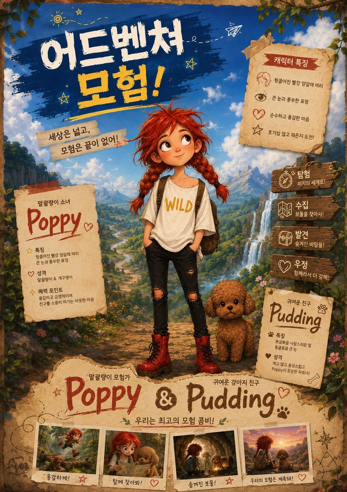

Unity · 개발 중
어드벤처 모험
"세상은 넓고, 모험은 끝이 없어!" 빨강 머리 소녀 Poppy와 강아지 친구 Pudding이 숲속 마을, 신비의 폭포, 비밀의 동굴을 탐험하는 Unity 게임입니다. 캐릭터 콘셉트와 세계관을 잡고 개발 중입니다.
- 탐험 · 수집 · 발견 · 우정을 핵심 재미로
- Poppy & Pudding 캐릭터 중심 스토리
- Unity로 직접 제작

JAVA 데스크톱 · v1.0 완성
라일락 채팅 — JAVA 데스크톱 버전
로그인·대기실·서버 관리부터 최대 10인이 참여하는 화상 채팅방까지, JAVA로 직접 구현한 데스크톱 화상 채팅 프로그램입니다. 캐릭터 선택, 채팅방 목록, 화면 녹화 표시 등 실사용 기능까지 담았습니다.
- 로그인 · 캐릭터 선택
- 대기실 · 채팅방 목록
- 서버 관리 · 10인 화상 채팅
PC · 모바일 · 웹 통합판
라일락 채팅 — 크로스플랫폼 화상채팅
위의 JAVA 데스크톱 버전과는 다른, PC·모바일·웹을 하나로 잇는 감성 화상채팅입니다. 같은 '라일락 채팅' 브랜드지만 채팅 방식과 플랫폼이 다른 별도 버전으로, 로그인·대기실·화상방·선물 기능을 화면과 함께 자세히 소개합니다.
- PC · 모바일 · 웹 어디서나 연결
- 주요 기능별 화면 미리보기
- 커피·꽃·하트 등 선물 기능

Windows · 완성
포토퍼즐 파이브
내 사진으로 만드는 퍼즐 게임입니다. 갤러리에서 사진을 골라 3×3부터 8×8까지 난이도를 선택해 즐길 수 있고, 퍼즐판은 4:3 비율에 자동으로 맞춰집니다.
- 기본 이미지 27장 + 갤러리 사진 선택
- 3×3 ~ 8×8 난이도
- 완성 시간 측정 · 조각 이동